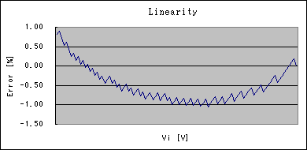

コンデンサを充電しながらその電圧が被測定電圧に達するまでの時間を計り、その時間をもってA-D変換の値とするところは他の方式と同じです。変換中は割り込みを禁止しておかなければならないのは言うまでもありません。
この回路では内蔵のプルアップ抵抗でコンデンサを充電するようにしたため、外付けの抵抗を省くことができました。好都合なことに、プルアップ電流は入力電圧2V以下でほぼ定電流になる特性があります。このため、この範囲をA-D変換の入力レンジとすることによりリニアリティが大変良くなっています。
ただ、プルアップ電流は周囲温度に影響されるので、温度に対する安定性はあまり良くありません。まぁ、常温付近（10℃〜40℃程度）の使用なら±5%程度の範囲には収まると思いますが。温度特性を求めるなら、内蔵プルアップ抵抗の代わりに外付けのCRD（100μA程度）で充電すれば良いでしょう。この場合、0〜4V程度まで良好なリニアリティで温度特性も良くA-D変換できます。


;---------------------------------------;
; A-D変換ルーチン
adc: ldi ZL, 0 ;Clear counter
ldi ZH, 0 ;/
cbi DDRB, 0 ;Start to charge
sbi PORTB, 0 ;/
adiw ZL, 1 ;Wait for Vc reaches Vi
sbis ACSR, ACO ;
rjmp PC-2 ;/
cbi PORTB, 0 ;Discharge capacitor
sbi DDRB, 0 ;/
ret ;Z = result